Robotic-harness · 归档于 2026-11-15
PEAR
PEAR: a Post-training Engine for Agentic Robotics · 论文 Training Reasoning Models in Simulation to Natively Use Real Robots
归档到 Robotic harness：让 reasoning model 直接当 robot policy 的“无 harness”路线，评测用的正是 LIBERO / LIBERO-Pro / RoboDojo；训练在仿真里，也和 Sim-robot-learning 相关。
TL;DR
- Problem
- 开源 reasoning model 直接操作机器人几乎全失败（LIBERO 1.6%，真机 0/30）；能做的只有闭源 frontier 模型，或者靠 harness / demo 从外面补。
- Idea
- 像训 computer-use agent 一样训 robot-use agent：看相机 → chain of thought → 输出 end-effector 的下一个 pose，只用仿真里的 0/1 成功奖励做 RL；PEAR 是让这种长上下文多轮 RL 跑得动的训练、评测、部署全套代码。
- Result
- Qwen3.8-27B：LIBERO 1.6% → 74.4%，没见过的真机双臂 YAM 0/30 → 18/30，九个通用 benchmark 无可测退化（平均 −0.15 分）。
Problem
开源模型不会“原生”用机器人，现有补法都把能力放在模型外面
Running example · 后面每个 stage 都跟着它走
真机 Align blocks（Scene 1, Trial 1）：双臂 YAM（训练里从没出现过）+ 3 路相机 + 指令 “Use the set square to push the three blocks into a straight, aligned row, then release the set square and reset the robot arm.” → 想要：25 轮以内把三个红方块推成一排，放下 set square，手臂回位。
flowchart LR IN["例子输入
真机 YAM · 推齐 3 块"] IN --> A1["开源模型直接上
Qwen3.8-27B base"] A1 --> AX["不会用机器人
12 轮没对齐 · 真机 0/30"]:::gap IN --> B1["闭源 frontier RUA
GPT-6 Astra / 6.1 Sol"] B1 --> BX["能做，但权重不开放
LIBERO 80.6 / 76.2"]:::gap IN --> C1["加 harness
SAM 3 · skill · primitive"] C1 --> CX["可能收窄动作空间
§1 的说法 · 无实验"]:::gap IN --> D1["VLA + demo SFT
π0.5"] D1 --> DX["照着示范的动作做
同场景换任务 0.75%"]:::gap
只有第一条 lane 真在这个例子上跑过（Table 7）。后三条论文没在真机上测：frontier 的数字是 LIBERO max effort（Fig. 3b），harness 的问题只有 §1 一句 “may restrict their action space and thereby make other tasks infeasible”，全文没有任何 harness baseline；frontier 模型 max effort 仍高于本文（80.6 / 76.2 vs 74.4）；π0.5 的 0.75% 是 LIBERO-Pro task perturbation（Fig. 4b）——放到这个例子上是我的推断。
根本问题：“会用机器人”这项能力不在开源模型里，harness 和 demo 只是从外面补，补的同时限制了动作或绑死了动作。 这篇的切入点：把能力直接训进模型——仿真里纯 RL、零 demo、无 harness，配方照搬 computer-use agent。
Related work
| 相关工作 | 解决什么 | 怎么解决 | 和本文的区别 |
|---|---|---|---|
| 同一问题 · 别的解法 | |||
| Frontier RUA GPT-6 Astra, Claude Fable 5.2；Astranomy, RoboICL | 通用机器人控制 | 闭源 VLM 直接看图、推理、出 pose | 只有最强闭源模型行 → 开源 27B 用 RL 练到接近（本文属于这一族的“原生 RUA”） |
| RUA harness ORA, ASPIRE, Harness VLA, OpenRUA, RAX, uni-robot-agent | 让开源模型也能完成任务 | 外挂感知工具、skill library、motion primitive、memory、code execution | 动作被收窄成几个选项 → 不给任何工具，定位、规划、发现失败都由模型自己做 |
| Harness 里的 post-training PyRUA-Lean（RL）；CaPtain, AgenticRoboRL, ZAP（SFT → 多轮 RL） | 把开源模型训得更会用 harness | 在 harness 内做 RL，或先 SFT 再 RL | 训完仍离不开 harness、多数要 demo → 无 harness、只用 RL，并做了 sim → real |
| VLA + demo SFT π0.5, OpenVLA, RT-2 | 指定任务上的高成功率 | 在任务示范上监督微调 | 学到的是示范的动作，指令一换就崩 → 保留 base 的读图读指令能力，RL 只教“按读到的去做” |
| 相似做法 · 别的问题 | |||
| RL 训 computer-use agent OpenAI CUA / Operator, DigiRL, WebRL, UI-TARS-2 | 操作电脑、网页、手机 | 截图 → 推理 → click；SFT 后 RL，或 online 多轮 RL | 环境是 OS → 同一配方换成仿真机器人，click 换成 pose |
| Verifiable-reward RL 训长推理 GRPO (DeepSeekMath), DeepSeek-R1, DAPO | 让模型学会长 chain of thought | 可验证的对错当奖励，组内归一化 advantage | 单轮文本题 → 多轮、带图、约 94k token 的 episode，所以要 PEAR 这套 infra |
来源：论文 §2 Related Work 和 §1 的对比，未另行检索。Harness VLA 就是 library 里的 RPent。
Level 1 · Big picture
把 computer-use 的 observe → reason → act 换到机器人上，然后只用仿真成功率去 RL
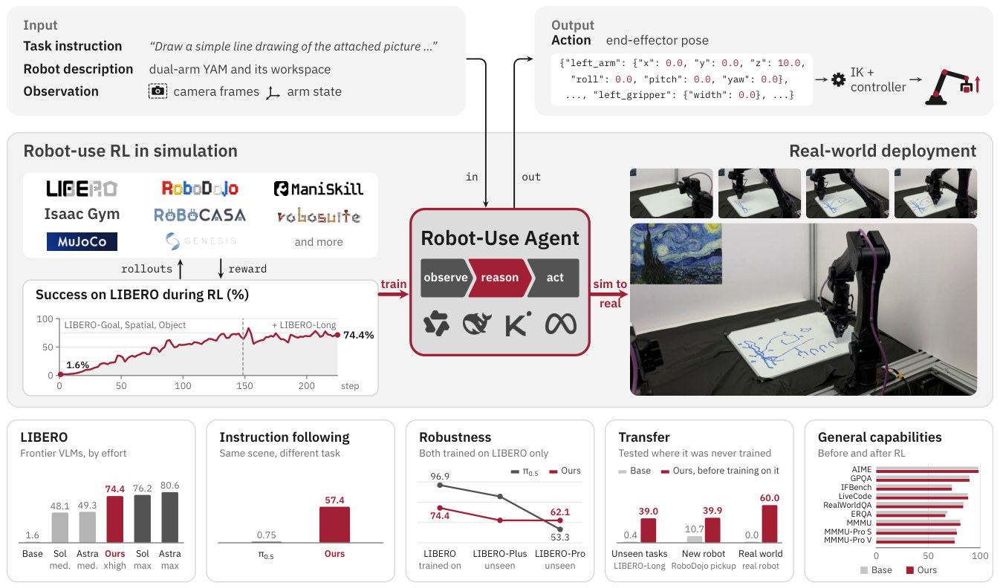
怎么读这张图
- 左上 Input：task instruction + robot description + observation（camera frames, arm state）——例子里是推方块的指令、双臂 YAM、3 路相机。
- 中间 Robot-Use Agent（observe → reason → act）：就是 reasoning model 本身，没有别的模块。
- 右上 Output：一个 JSON 的 end-effector pose，交给 IK + controller 去动臂。
- 左 Robot-use RL in simulation：仿真器给 rollouts 和 reward；小图是 LIBERO 训练曲线 1.6% → 74.4%。
- 右 Real-world deployment：训好的模型 sim to real，直接上真机（图里是画《星夜》的 demo）。
- 底部五格：LIBERO、instruction following、robustness、transfer、general capabilities——对应下面 Results 的 E1–E5。
flowchart LR I["Input
指令 + 3 路相机
+ 双臂状态 JSON"] --> M["Robot-use agent
CoT → 下一个 pose
(RL 只在仿真里训)"]:::win M --> O["Output
IK + controller 动臂
10 轮后三块对齐"] O -. "下一轮 observation" .-> I
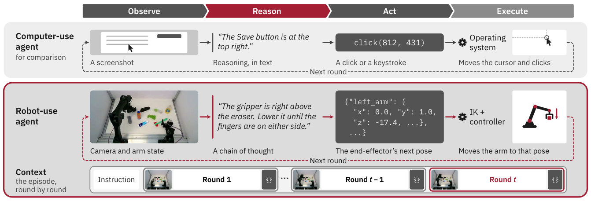
怎么读这张图
- 四列 Observe / Reason / Act / Execute：两种 agent 的步骤一一对应：screenshot ↔ camera and arm state，click(812, 431) ↔ pose JSON，operating system ↔ IK + controller。
- 红框 Robot-use agent：推理是一段文字（“The gripper is right above the eraser…”），动作是 {"left_arm": {"x": 0.0, "y": 1.0, "z": -17.4, …}}，数值是变化量。
- 底部 Context：Instruction + Round 1 … Round t 全部留在上下文里，所以模型记得做过什么——例子成功那次到第 10 轮用了 54.8k token。
Level 2 · Stages
6 个 stage：协议 → rollout ⇄ update → curriculum → 评测 → 部署
flowchart TD S1["1 · Protocol
状态 JSON + 图 → Δpose JSON"] --> S2["2 · Rollout
仿真 align_blocks · 8 条一组"] S2 -- "0/1 reward" --> S3["3 · Update
GRPO + score centering"] S3 -. "新权重" .-> S2 S3 --> S4["4 · Curriculum
LIBERO 3 套 → 4 套 → RoboDojo 2 任务"] S4 --> S5["5 · Evaluate
align_blocks 17.0 → 78.8"] S5 --> S6["6 · Deploy
真机 YAM · 10 轮成功"]:::win click S1 href "#stage-1" click S2 href "#stage-2" click S3 href "#stage-3" click S4 href "#stage-4" click S5 href "#stage-5" click S6 href "#stage-6"
点击 stage 展开 Level 3 细节。repo 标的是论文没写、只在 repo 的 README / docs 里有的内容。
Level 3 · Details
每个 stage 的细节
Stage 1 Protocol：一套对所有机器人都一样的对话协议 指令 + 状态 JSON + 相机图 → chain of thought + Δpose JSON
- Why：动作是 pose 级目标、controller 留在模型外，所以仿真和真机、不同机器人可以共用同一个接口（§3.1）。
- System prompt 三段：通用协议 +
ENVIRONMENT（每个 benchmark / 机器人一份：坐标系、gripper 朝向、相机）+TASK（指令）。 - Observation：机器人 = 若干 named parts，每个 part 有 named quantities；每轮先给全部当前值的 JSON，再给相机图。长度 cm，角度 rad。
- Action：同结构的 JSON，写每个量的变化量，0 表示不动；回复必须以唯一一个
```json块结尾。 - Execution：controller 一直动到所有目标到位且静止，或被挡住停下；然后给下一轮 observation。
- Episode 结束：仿真报成功 / 到 benchmark 步数上限 / context token 用完 / 回复里没有合法 action。
- 换机器人只换两处：parts 列表和
ENVIRONMENT。LIBERO 单臂 Franka、RoboDojo 双臂 ARX、真机 YAM（直接用 RoboDojo 那份）；repo 还带 RoboLab 和 SO-101（单 wrist camera）的 prompt。
flowchart LR a["Observation
4 个 part 的当前值
+ head / 两个 wrist 图"] --> b["Model
xhigh：约 3.23k
thinking token / 轮"] b --> c["Action
right_arm z −5
right_gripper −1"] c -. "IK + controller 执行完" .-> a
Running example 在这一步
YAM 的 action 有 4 个 part：left_arm、right_arm（各 x, y, z, roll, pitch, yaw）和 left_gripper、right_gripper（width）。Prompt 里给的范例：{"right_arm": {"z": -5, …}, "right_gripper": {"width": -1}, 其余全 0} = 右 gripper 下降 5 cm 并合上（Appendix H）。3.23k 是 LIBERO 上的均值（Fig. 9a），真机每轮多长论文没报。
Stage 2 Rollout：在 Ray 集群上并发跑长 episode 当前权重 + 仿真任务 → 成组的 episode，每条一个 0/1 reward
- Why：一条 episode 平均 94k token（prompt 1.8k + response 92k）、19.7 轮、39–59 张图，每轮请求的大部分是已经算过的前缀。
- 集群：同一个 Ray 集群里 trainer 节点 + rollout 节点（vLLM engine + 仿真器）；LIBERO 在 rollout 节点的 CPU 上渲染，RoboDojo 在单独 GPU 节点的 Isaac 容器里。
- Action = tool call：框架把 action JSON 当成对仿真器的 tool call 执行，返回值就是下一轮 observation。
- 成组采样：同一任务、同一初始状态采 8 条为一组；每步 128 组（过滤后计数）；temperature 1.0；effort 全程 xhigh。
- Prefix cache：H100 上用 LMCache 把前缀 KV cache 卸到 CPU 内存，限制并发让命中率 ≥ 约 95%：160k cap 时每 engine 64 条，256k cap 时 32 条。GB300 主机内存小，不用 LMCache。
- 吞吐：8×H100 节点和 4×GB300 节点各约 2,000–3,000 tokens/s；MTP 因为 bug 没开。
- Reward：episode 结束时仿真报成功 = 1，否则 0。
flowchart LR a["vLLM engine
TP4 · 32–64 条并发
LMCache 前缀命中 95%+"] -- "action JSON" --> b["Simulator
MuJoCo on CPU
Isaac on GPU 节点"] b -- "state + 图" --> a b --> c["一组 8 条
同任务同初始状态
每条 reward 0 或 1"]
Running example 在这一步
例子在仿真里的对应物是 RoboDojo 的 align_blocks（双臂 ARX，Isaac）：每组 8 条从同一个初始摆放出发，推齐并回位的记 1。真机 YAM 本身从不参与 rollout。
Stage 3 Update：GRPO + group filter + score centering 128 组 × 8 条 episode + reward → 一次参数更新
| 符号 | 是什么 | 例子里的值 |
|---|---|---|
| τ | 一条 episode：每轮的 observation 和模型回复 | 一次 align_blocks 尝试，约 19 轮 |
| R(τ) | 这条 episode 的 reward | 推齐并回位 = 1，否则 0 |
| G | 一组里的 episode 数（同任务、同初始状态） | 8 |
| Â | advantage：这条比同组平均好多少 | 组内 2 成 6 败 → 成功约 +1.73，失败约 −0.58（我按公式算的示意） |
| πθ | 正在被更新的模型 | Qwen3.8-27B 当前权重 |
| μ | 当初生成这条 episode 的模型版本 | 比 πθ 旧一到两个版本 |
- Advantage（Eq. 1）：（这条的 reward − 组内平均）÷ 组内标准差；一条 episode 的每个生成 token（推理和动作、任何一轮）都拿同一个 advantage。
- Group filter（DAPO）：全成功或全失败的组 advantage 全是 0，直接丢掉换一组。
- Loss（Eq. 2）：REINFORCE + 组均值当 baseline，不用 PPO clipping；AdamW，lr 10−6，每步一次更新，按 token 平均，无 KL、无 entropy bonus。
- Score centering：rollout 和更新完全异步，生成用的版本（μ）落后一两版；修正项 = 减去“旧版本下一个 token 分布下的期望梯度”。只用这一项，不用 truncated importance sampling。
- 整条 episode 当一个训练序列：H100 上 FSDP8 × SP8（8 卡 sequence parallelism，每卡 32,512 token）+ gradient checkpointing + activation offloading + FlashAttention-3；GB300 上 FSDP4 × SP4（每卡 69,632 token）+ FlashAttention-4。
flowchart LR a["128 组 × 8 条
丢掉全 0 / 全 1 的组"] --> b["组内归一化
2 成 6 败：
+1.73 / −0.58"] b --> c["REINFORCE
+ score centering
8 卡分摊一条 episode"]:::win
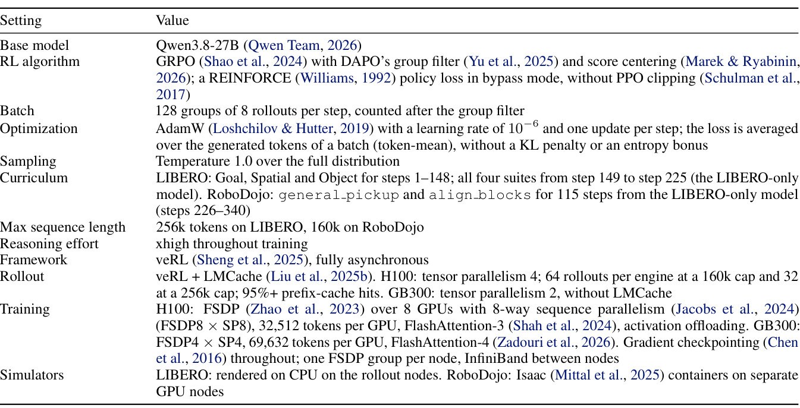
Running example 在这一步
一组 8 条 align_blocks 里只要有成有败，成功那几条的所有 token（包括“先去拿 set square”的推理）被加强，失败的被压低；8 条全败的组不产生任何信号——这就是为什么需要 Stage 4。
Stage 4 Curriculum：先训有信号的任务，靠迁移把别的任务“点亮” base model → LIBERO-only model（step 225）→ final model（step 340）
- Why：0/1 reward 下只有“有成有败”的组才有梯度；base 在 LIBERO Goal / Spatial / Object 约 2%，LIBERO-Long 0.4%，多数 RoboDojo 任务几乎为 0（§3.3）。
- 做法：先训已经有信号的任务；它们学到的技能把没训过的任务的成功率抬起来，等有成功了再把那个任务加进训练。
- RoboDojo 只挑两个任务：
general_pickup和align_blocks，因为 LIBERO 训完后它们合计成功率约 25%，信号最强。 - 总成本：约 50,000 H100-equivalent GPU-hours。repo 一次 run 用 32 个节点（每节点 8×H100 或 4×GB300）。
flowchart TD a["Stage 1 · step 1–148
Goal + Spatial + Object
约 2% → 约 70%"] --> b["Stage 2 · step 149–225
加 LIBERO-Long（已 39.0%）
LIBERO 64.0 → 74.4"] b --> c["Stage 3 · step 226–340
general_pickup + align_blocks
约 25% → 约 70%"]:::win
| Recipe repo | 训什么 | 节点（8×H100） | 每 episode response 上限 |
|---|---|---|---|
run_stage1.sh | LIBERO-Goal, -Spatial, -Object，从 base 开始 | 8 trainer + 24 rollout | 160,000 |
run_stage2.sh | 四个 LIBERO suite，从 stage 1 的 checkpoint | 8 trainer + 24 rollout | 256,000 |
run_stage3.sh | LIBERO + RoboDojo 两个任务（RoboDojo 占一半 session） | 8 trainer + 16 rollout + 8 RoboDojo | 256,000 |
表来自 repo 的 train README。和论文有两处对不上：论文 Table 1 写 max sequence length 是 LIBERO 256k、RoboDojo 160k；论文说 stage 3 训“两个 RoboDojo 任务”，README 写的是 LIBERO 和 RoboDojo 混训。
Running example 在这一步
align_blocks 在仿真里：base 13.0% → 只训 LIBERO 后 17.0%（零样本）→ stage 3 后 78.8%（Fig. 5b、6b）。真机上对应 0/10 → 1/10 → 6/10。
Stage 5 Evaluate：每个 benchmark 一个 recipe 导出的 checkpoint → 成功率 jsonl + summary
- 流程：
export_checkpoint.sh导出模型目录 → 起一个全是rollout节点的 Ray 集群 → 跑 recipe → 结果在$RUN/val_dumps/eval_<step>.jsonl和_summary.json。 - 通用 benchmark：九个 reasoning / coding / vision benchmark 走 EvalScope，单独起 vLLM server。
| Recipe repo | Benchmark | 机器人 · 仿真器 | README 写的 episodes |
|---|---|---|---|
eval_libero.sh | LIBERO | Franka · MuJoCo | 2,000 |
eval_libero_plus.sh | LIBERO-Plus | Franka · MuJoCo | 10,030 |
eval_libero_pro.sh | LIBERO-Pro | Franka · MuJoCo | 10,000 |
eval_robodojo.sh | RoboDojo general_pickup, align_blocks | 双臂 ARX · Isaac Sim | 328 |
eval_robolab.sh | RoboLab-120 | Franka + Robotiq · Isaac Sim | 120 |
eval_general.sh | 九个通用 benchmark | — | — |
论文的口径：LIBERO-Pro 每种 perturbation 2,000 条；RoboDojo 每任务 163–200 条；RoboLab-120 每任务 10 条共 1,200 条。README 的 120 和论文的 1,200 怎么对应，README 没解释。
Running example 在这一步
eval_robodojo.sh 给出 final model 在 align_blocks 上 78.8%、general_pickup 上 71.2%（Fig. 6b，95% Wilson interval）。
Stage 6 Deploy：一个 model server + 一个 robot station final model + 真机 → agent loop 驱动 YAM 或 SO-101
- Why：每动一步前都要长推理，decode 速度决定动作速度（§4.6）。
- Model server：vLLM 单卡，NVFP4 量化 + DFlash2 drafter（平均接受 3.2 token）+ 自家 megakernel：RTX 5090 221 tokens/s，GB300 747 tokens/s；xhigh 一轮约 4.3 s。
- 注意：NVFP4 会降准确率、拉长 chain of thought，论文所有评测都用 BF16 权重。
- Robot station repo：装在接机器人的 Linux 机器上，不需要 GPU；
pear-station命令 + operator 网页（enable motors → Home → start a task）。 - 支持的真机 repo：YAM（双臂，各一个 USB-to-CAN，3 个 RealSense：left / top / right）；SO-101（单臂，只有 wrist camera）。
- 上机前的标定 repo：每一步都是一条
pear-station命令，值没填完或没标定时机器人不会动。
flowchart TD a["check
找 CAN / 相机序列号"] --> b["calibrate + preflight
gripper 限位 · 不上电检查"] b --> c["smoke
joint 1 来回一次"] c --> d["friction-sweep
重力 + 摩擦 · 每臂约 9 分钟"] d --> e["accuracy-check
中位 ≤ 3 mm · 每个 pose ≤ 6 mm"] e --> f["run_station.sh
agent loop 接 model server"]:::win
Running example 在这一步
YAM 用 RoboDojo 那份 ENVIRONMENT prompt，没有任何真机数据。判负规则：超过 25 轮，或单轮推理超过 32k token；IK 解不出的 action 会重试，重试也算一轮。Scene 1 Trial 1：final model 10 轮 · 54.8k context 成功（Table 7）。
Recap：例子覆盖了论文的哪些 idea
| 论文 / repo 里的 idea | 例子里在哪体现 |
|---|---|
| CUA 式 observe → reason → act，无 harness | Stage 1：YAM 每轮看 3 路相机，直接写 4 个 part 的 Δpose |
| 同一协议跨机器人、跨 sim / real | Stage 1 / 6：真机 YAM 直接用 RoboDojo 的 ENVIRONMENT prompt |
| 异步长上下文 rollout（LMCache prefix cache） | Stage 2：仿真 align_blocks，8 条一组 |
| GRPO + DAPO group filter + score centering | Stage 3：2 成 6 败的一组如何变成梯度 |
| FSDP × sequence parallelism 放下整条 episode | Stage 3：8 卡 × 32,512 token |
| Curriculum 靠迁移点亮没信号的任务 | Stage 4：align_blocks 13.0 → 17.0 → 78.8 |
| Sim-to-real，零真机数据 | Stage 6 / E4：Scene 1 Trial 1 base ✗ → final ✓ |
| 单卡部署（NVFP4 + DFlash2 + megakernel） | Stage 6：model server + robot station |
| Instruction following、通用能力不退化、effort 可调 | 例子不覆盖，见 E2、E5、E6 |
Results
纯仿真 RL 学到的“用机器人”能迁移到新指令、新机器人和真机，而且不伤通用能力
顺序同论文 §4，比的都是成功率：E1 RL 能不能从近零学起来 → E2 换扰动、换指令还行不行 → E3 没训过的任务和机器人 → E4 真机 → E5 通用能力掉没掉 → E6 推理长度和速度。repo 的 README 没有新数字，全部来自论文。
E1只靠 0/1 奖励，RL 能把一个 1.6% 的模型练起来吗？§4.1
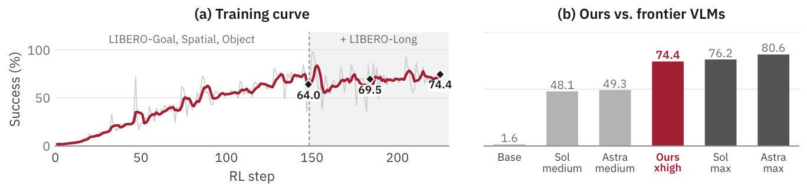
- 说明什么
- 成功率从近零升到接近 frontier。LIBERO 1.6% → 74.4%；高于 GPT-6.1 Sol / GPT-6 Astra 的 medium（48.1 / 49.3），低于它们的 max（76.2 / 80.6）。
- 在故事里
- 第一环：RL alone 可行，后面的泛化实验都基于这个 LIBERO-only checkpoint（step 225）。
- 指标
- LIBERO 2,000 条评测 episode（40 个任务 × 50）的成功率，成功由仿真器判定。
- 怎么评测
- 所有 VLM 用同一协议、无 harness；effort 是各家自己的“想多久”设置，Ours 用训练时的 xhigh。
- 分 suite（Table 2）：Ours 在 Spatial 85.8、Object 97.0 是 VLM 里最高；Goal 61.4、Long 53.2 落在两档之间，这两个 suite 有 19% 和 33% 的 episode 因 256k context 用完而结束。
E2场景被扰动、指令被换掉时还能做吗？§4.2
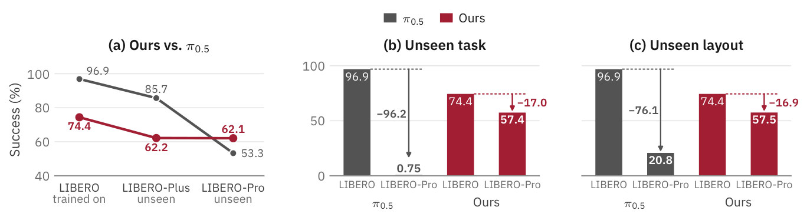
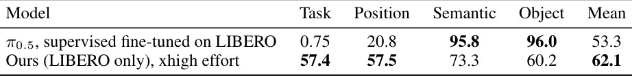
- 说明什么
- 更稳、更听指令。同场景换任务：π0.5 96.9 → 0.75，Ours 74.4 → 57.4；换物体位置：π0.5 → 20.8，Ours → 57.5。LIBERO-Pro 平均 62.1 vs 53.3。
- 在故事里
- “模仿示范”和“推理任务”的区别：动作要变时 π0.5 崩，Ours 每种扰动只掉 1–17 分。只改措辞或物体外观时 π0.5 仍领先（95.8 / 96.0 vs 73.3 / 60.2）。
- 指标
- 成功率。LIBERO-Plus 10,030 条（七个维度）；LIBERO-Pro 每种扰动 2,000 条。
- 怎么评测
- 两个 policy 都只在 LIBERO 上训：π0.5 用示范 SFT，Ours 用 RL。
- π0.5 没有重跑：数字取自 openpi repo、Yan et al.、Zhou et al.（LIBERO-Pro 是四个 suite 的平均）。
- LIBERO-Plus 上两者掉得差不多（11.2 vs 12.2 分）；Ours 最怕 robot initial state（37.9%，掉 36.5 分）。
E3没训过的任务、仿真器、机器人，零样本能做多少？§4.3
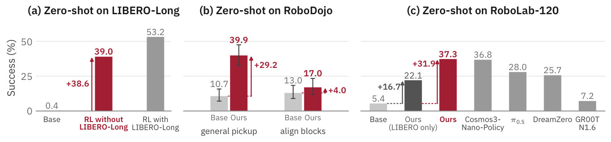
- 说明什么
- 成功率零样本上升。LIBERO-Long 0.4 → 39.0；RoboDojo general_pickup 10.7 → 39.9、align_blocks 13.0 → 17.0；RoboLab-120 5.4 → 22.1（LIBERO only）→ 37.3（final）。
- 在故事里
- 学到的东西不绑在 LIBERO 的仿真器或 Franka 上；这也是 curriculum 能成立的原因（Stage 4）。
- 指标
- 成功率；RoboDojo 每任务 163–200 条，误差棒是 95% Wilson interval；RoboLab-120 是 120 个任务 × 10 条，final model 取两次评测的平均。
- 怎么评测
- RoboLab 对比的 Cosmos3-Nano-Policy 36.8、π0.5 28.0、DreamZero 25.7、GR00T N1.6 7.2 都是 DROID 真机数据训的 checkpoint，由 RoboLab 组织方评测（这个 π0.5 不是 E2 那个）。
- 按难度（Table 5）：final 在 simple 44.6、moderate 35.8 最高；complex 只有 13.2，Cosmos3-Nano-Policy 是 25.3。
E4纯仿真训出来的，能直接用没见过的真机吗？§4.4
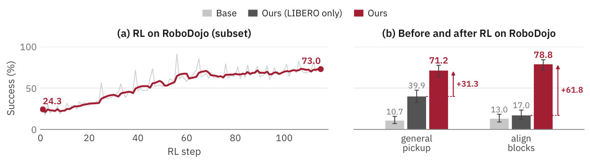
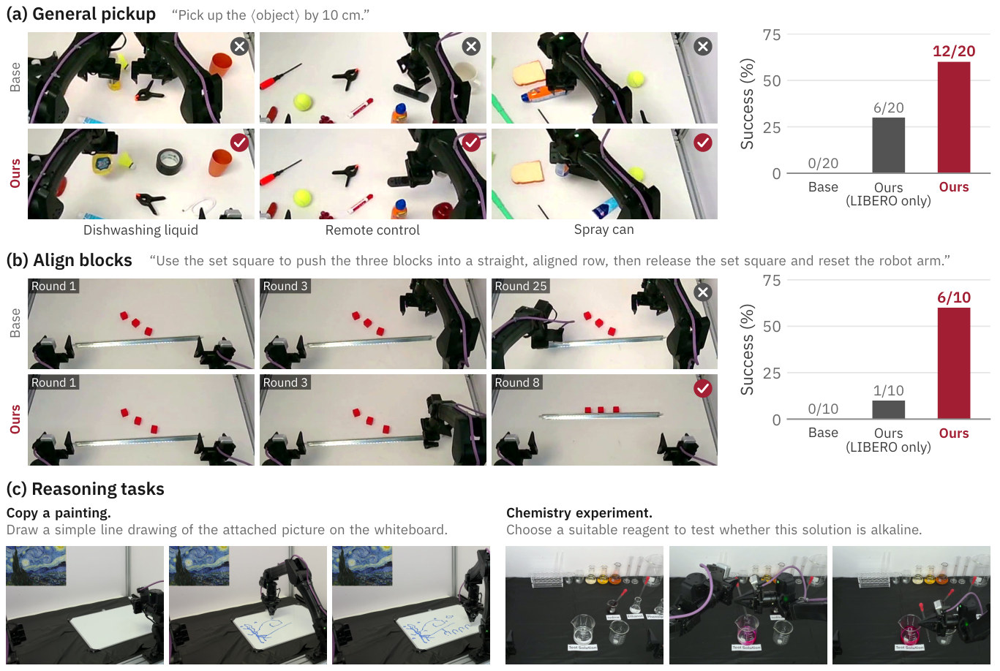
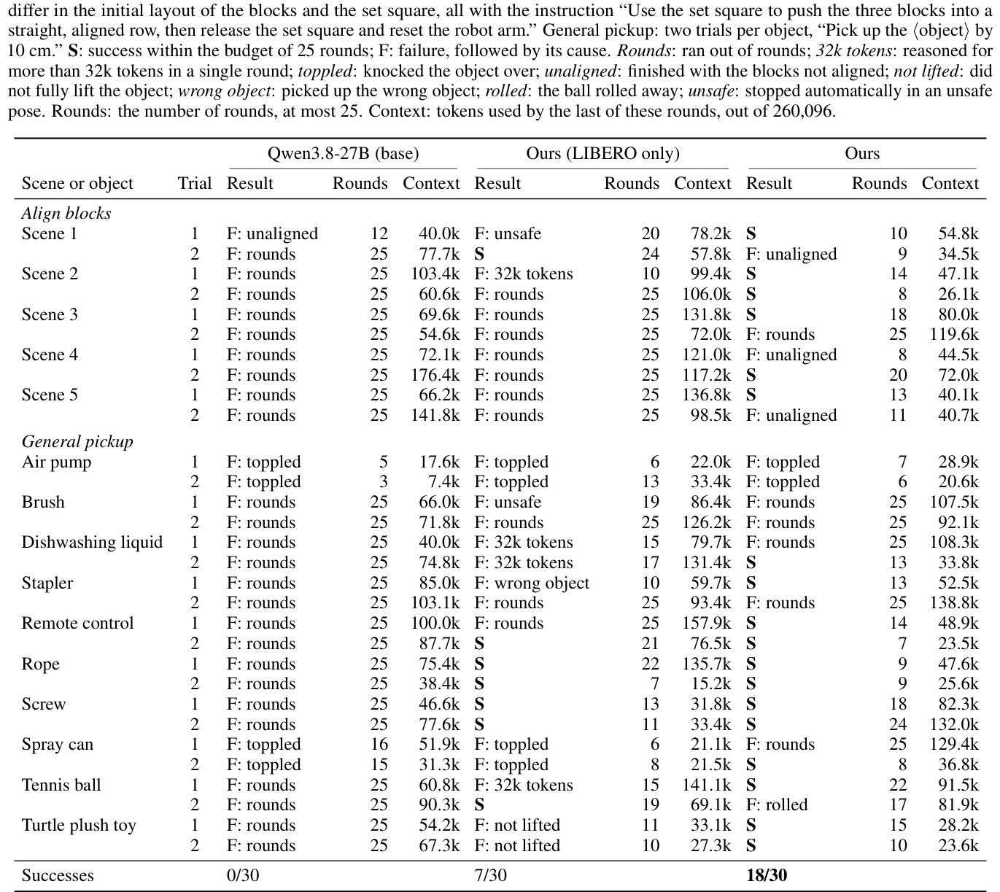
- 说明什么
- 真机成功率 0 → 60%。30 次试验：Base 0/30，LIBERO only 7/30，final 18/30（align blocks 6/10，general pickup 12/20）。仿真里 general_pickup 39.9 → 71.2，align_blocks 17.0 → 78.8。
- 在故事里
- 标题的那句话：只在仿真里训、零真机数据、换了机器人照样能用；连只训过单臂 LIBERO 的 checkpoint 也有 23%。
- 指标
- 25 轮内完成任务算成功；超过 25 轮或单轮推理超过 32k token 算失败。成功的试验用了 7–24 轮、23k–132k context。
- 怎么评测
- Align blocks：5 个场景（方块和 set square 初始摆放不同）× 2 次；General pickup：10 个物体 × 2 次，指令 “Pick up the ⟨object⟩ by 10 cm.”
- 三个模型同机器人、同协议、xhigh effort；只有 final 在 RoboDojo 里训过这两个任务（用的是 ARX，不是 YAM）。
- 失败原因：Base 25/30 是轮数用完；final 的 12 次失败 = 6 轮数用完 + 3 没对齐 + 2 碰倒物体 + 1 网球滚走。air pump 和 brush 没有任何模型拿起来。
- 没有在真机上跑 frontier 模型或 VLA；reasoning task 只有定性展示。
E5训完机器人，模型原来的能力掉了吗？§4.5
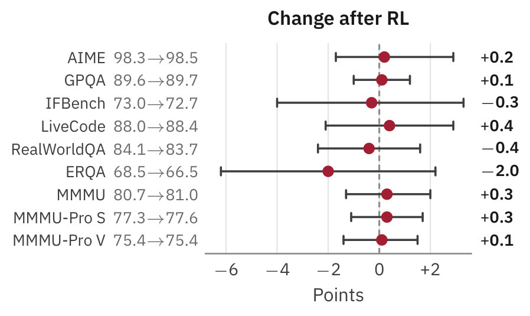
- 说明什么
- 没有可测的退化。九个 benchmark 的 95% 区间全部包含 0，平均变化 −0.15 分；最大的是 ERQA −2.0（68.5 → 66.5，区间 [−6.2, +2.2]）。
- 在故事里
- RURL 可以作为 foundation model post-training 的一部分：同一个模型既推理、写代码、看图，也用机器人。
- 指标
- final vs base 在同一批题上配对比较；区间来自 2,000 次重采样的 paired bootstrap。
- 怎么评测
- AIME 2026、GPQA Diamond、IFBench、LiveCodeBench v6、RealWorldQA、ERQA、MMMU (val)、MMMU-Pro standard / vision。
- evalscope 1.13.0，vLLM BF16，thinking-mode sampling（temperature 1.0，top-p 0.95，top-k 20）。
E6想多久、跑多快？§4.6
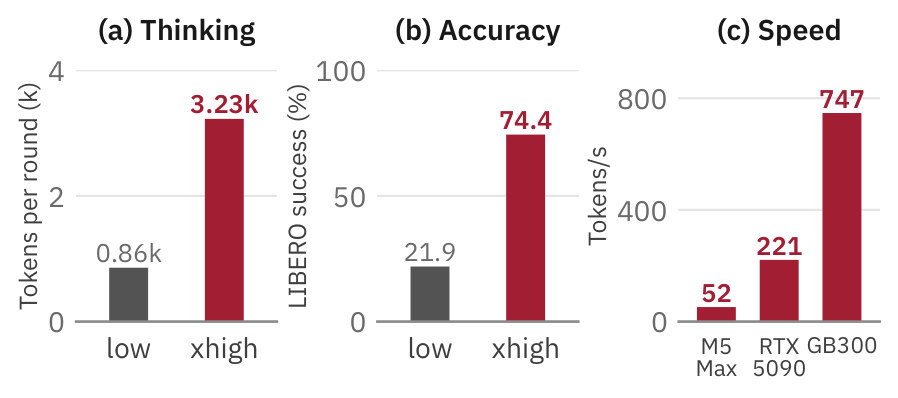
- 说明什么
- 成功率主要来自每步前的长推理；单卡能跑。low effort 每轮 0.86k token、LIBERO 21.9%；xhigh 3.23k、74.4%。Decode：M5 Max 52、RTX 5090 221、GB300 747 tokens/s。
- 在故事里
- 推理是能力的来源，也是慢的来源：747 tokens/s 下 xhigh 一轮约 4.3 s，low 约 1.1 s。
- 指标
- 每轮 thinking token 数；LIBERO 成功率（low 是两次评测的平均）；单设备 tokens/s。
- 怎么评测
- 训练只用 xhigh，没有任何 rollout 用过更低档；effort 由 chat template 控制。
- 速度用 NVFP4 权重 + DFlash2 drafter；GPU 上用自家 megakernel，M5 Max 上用 Inco 的 Splash engine。成功率用的是 BF16，两者不是同一套权重。
Limits
局限和开放问题
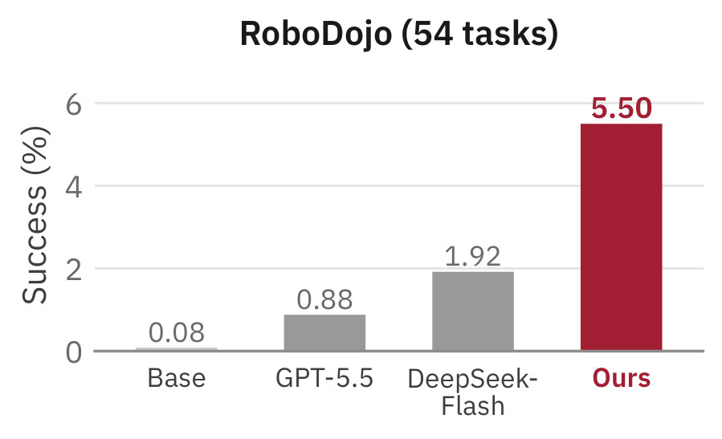
- 长任务被 context 卡住：完整 RoboDojo 上 540 条里 370 条（68.5%）因 256k context 用完而失败；成功的 21 条里 15 条来自训过的两个任务。作者自己说“管理 context 的 harness”可能更高。
- 规模小：只训了两个仿真器、LIBERO + 两个 RoboDojo 任务，因 GPU 不够停下；约 50,000 H100-hours。
- 慢：RL 里没有长度惩罚；一轮平均约 4.3 s，个别推理到 32k token，一步要半分钟以上。
- 吃 prompt：27B 的 base 不了解自己控制的机器人，要在 prompt 里写清楚；画画、化学实验这类任务要把机器人和任务描述得很细才成功。
- 一轮一个 pose：还不能可靠地输出 action chunk；精度和步数预算部分取决于 controller 的实现。
- 没用 SFT：缺高质量 in-distribution 数据，也担心伤通用能力；作者认为机器人数据应该加在 pretraining / mid-training。
- 论文没说的：没有 score centering、group filter、curriculum 的 ablation；真机只有 30 次试验、一台 YAM；SO-101 在 repo 里支持但没有任何结果；repo 没有 release tag，PDF 链接也不带版本号。
For Robotic harness
对我们有什么用
- 一个现成的“无 harness”对照组：它的协议（named parts 的 Δpose JSON + 每个环境一份 ENVIRONMENT prompt）可以直接做成 Runtime 里的一个 Native API policy，在我们已有的 LIBERO / LIBERO-Pro / RoboDojo 上和 Codex、Claude Code policy 同台比。
- harness 的价值正好在它的短板上：完整 RoboDojo 5.50%、68.5% 的失败是 context 用完——Supervisor 管 context 和 evidence 的做法，就是作者点名的改进方向。
- SO-101 可以直接试：repo 带 SO-101 的 station 和 prompt，model server 单张 RTX 5090（NVFP4）就能跑；训练要 32 个 8×H100 节点，我们只能用放出的权重。